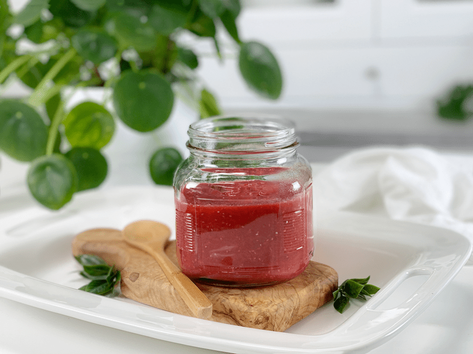
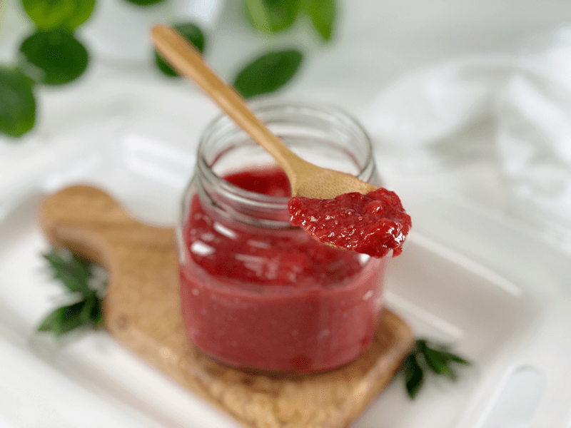
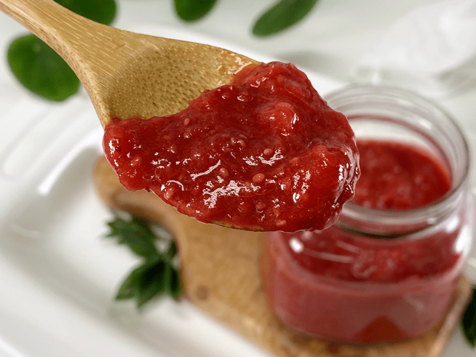
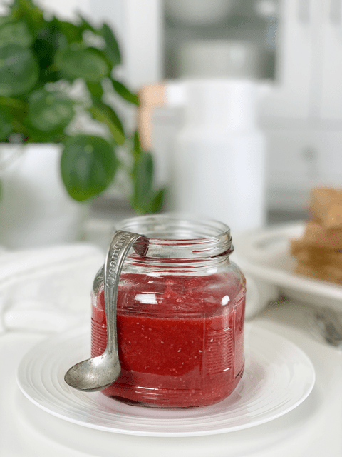

Strawberry Rhubarb Chia Refrigerator Jam | Sugar-Free
This recipe is a refrigerator jam, which means is no canning involved, but it will stay fresh in the refrigerator for a few weeks. It’s a perfect combination of sweet and tart that is bound to wake up any dish you find worthy of its presence. I have shared this story before in one of my recipes (buried deep within the site), but I am inspired to share it again. It’s a comforting childhood memory that comes up every time I eat or see rhubarb.

Throughout my childhood years, I would spend my summers with my great-grandparents. I was blessed to have them in my life until I was thirteen years old. Great-grandma always grew a garden in her back yard, and one of the items that I daily devoured was rhubarb. I would pull a stalk from the plant, and skip into the house, where my great-grandmother would meet me at the door with the sugar shaker. We never had to exchange words. I would hold out my hand, and she would pour a little sugar into the cup of my palm. I would then turn around and skip my way back outside, where I would dip the end of the rhubarb into the sugar and munch away. I will always cherish that memory.
But let’s get down to business! Please be sure to read through my jam tips so you, too, can make a delicious batch of Strawberry Rhubarb Chia Refridgerator Jam!

Refrigerator Jam Tips
- It is best to start with ripe fruit, since it will be at its fullest flavor, texture, and nutrient potential. Unripe strawberries and rhubarb will require more sweetener to make them enjoyable.
- If you don’t have access to fresh strawberries or rhubarb, you can use frozen.
- If you’ve never worked with rhubarb, it resembles the look and feel of celery. Look for thinner stalks as well as darker red–these provide the best flavor.
- You will want to make sure that you cut the rhubarb into smaller pieces, or it will take a lot longer than the berries to break down during the cooking process. DO NOT eat or juice the leaves of rhubarb, as it is toxic when consumed, which is why you never see rhubarb in the grocery stores with the leaves on it.
- This recipe makes about 2 cups of jam, but that will vary based upon how much it reduces during the cooking process.
The Joys of Jam

Make Every Bite Count
- We have a great opportunity to turn regular everyday sugar-laden jam into something healthy. Try to use all organic ingredients, ESPECIALLY the strawberries, which top the list as having the highest levels of pesticide residue, containing 22 different types.
- If stevia isn’t your jam, you can use maple syrup. Taste taste taste-test! Every batch will vary based on the ripeness of the fruit.
- When we are going through trying times (such as this pandemic), it is easy to turn to comfort foods that are typically nutrient-void. These foods have been engineered to trigger your pleasure centers, so they trick your brain into overeating. There’s no better time than now to curb that habit. Reach for nutrient-dense food to feed your mind, body, and soul. You will reap immeasurable rewards.

Ingredients
Yields 2 cups
- 2 cups rhubarb cubed (cut each stalk down the middle and then chop)
- 2 cups strawberries quartered
- 1 – 3 Tbsp chia seeds
- 1 Tbsp fresh lemon juice
- 1/4 tsp sea salt
- 2 tsp vanilla extract
- 1/4 tsp NuNaturals liquid stevia to taste
-
In a medium saucepan, combine the rhubarb, strawberries, and salt. Cover, let cook down, and bring to a simmer over low-medium heat, stirring frequently.
- If you’d rather not use stevia, you can add 2-4 Tbsp of maple syrup at this time. Stevia users–see step #4.
- Adding salt to a jam base will help round out the sweet and sour flavors.
- A long, slow simmer drives the moisture out of the fruit, helping to preserve and thicken it at the same time.
- If the jam starts sticking to the base of the pan, the temperature is too high; reduce it.
-
When the mixture starts to release its natural juices and is soft, use a potato masher, fork, or the blade of your spatula to lightly mash the strawberries and rhubarb.
- If you want a creamy-style jam, you can either blend it in the blender or with a hand-held immersion blender.
- Regardless of what method you use, the mixture will be hot, so use extreme caution!
-
Add the chia seeds, lemon juice, and salt and reduce the heat to medium-low. Continue cooking uncovered, occasionally stirring to prevent the bottom from scorching, for about 30 to 35 minutes or until the mixture has thickened, and there are no big fruit chunks left.
- Remove from the heat and add the stevia (if using) and vanilla, giving it a good stir.
- I added a 1/4 tsp of stevia (hey, I don’t judge your taste buds, don’t be judging mine!)
-
Let cool before transferring to clean jars.
-
Keep in a sealed jar in the refrigerator for up to 2 weeks. You can also freeze this jam for up to 3 months (without affecting the flavor). Make sure that you use freezer-safe jars or containers that are airtight. Label and date each jar.
© AmieSue.com